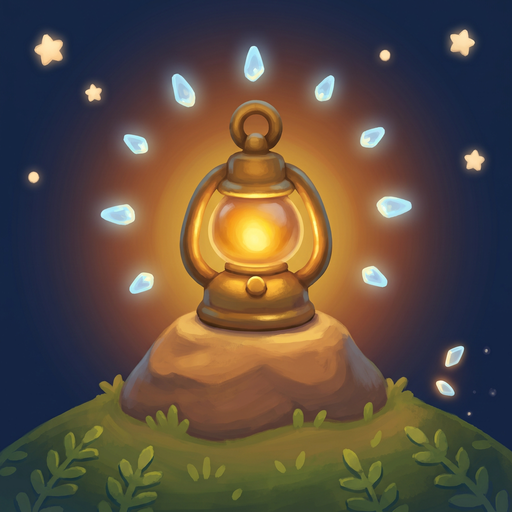
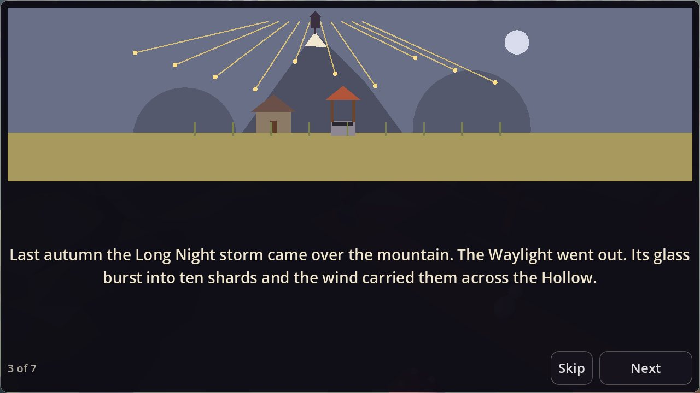
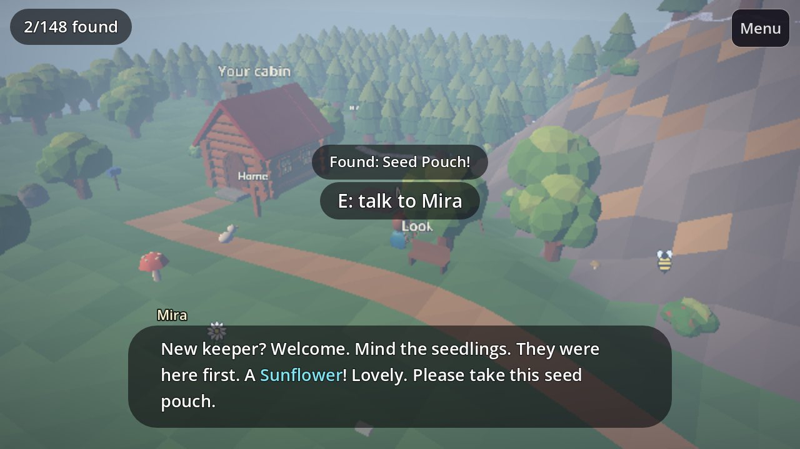
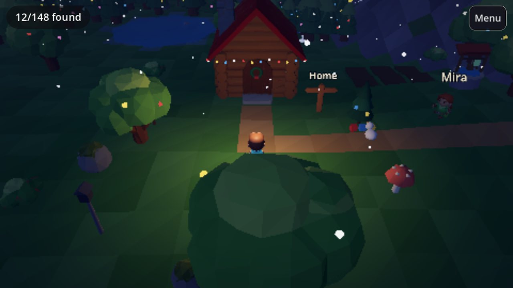

Keeper of the Hollow
Bring The Light Home
The Waylight lit the hollow until a storm scattered it in ten shards. Now the princess calls up the old well for someone small enough to notice small things. That is you. Explore six lands, find 148 treasures, make good neighbors and take all the time you like.
Version 0.13. Release notes · Backlog · Source on GitHub



The story
High on Hollow Mountain stood the Waylight, a great lantern every traveler steered home by. Anna, the first lamp keeper, lit it long ago. Last autumn the Long Night storm blew it out and scattered its glass across the hollow. Princess Elowen grew faint as the light failed. She called down the palace well for help, and her voice came up in the old well, where you were drawing water. You are one of the Thimblefolk: small, fond of supper and not at all keen on adventures. You heard her anyway.
Nobody fights. Each shard has a guardian who asks a favor or a riddle, and the answer is always something you find. The princess says it herself: take your time.
What kind of game is this?
Things to do
- Follow the princess's voice and win six shards of the Waylight from six guardians.
- Listen at the old well. Each set on display in the museum wakes an echo of the hollow.
- Get to know ten neighbors. Hear their stories, follow their keepsakes and read Anna's well stones.
- Explore six lands: meadows, autumn woods, a cave, the Deep Cave, snowy peaks and a desert canyon.
- Climb Hollow Mountain, glide down and sign the summit logbook.
- Fish, catch bugs and grow a garden.
- Donate sets to the museum, then walk its hall.
- Cook at the cabin stove, furnish your cabin and trade with the traveling merchant.
- Finish the notice board bundles and the village mends the old well.
- Play fetch with Ninja the cat or Cooper the dog.
- Ring the bell for a festival. Switch on the Christmas theme.
Controls
- Keyboard: WASD or arrows to walk, Space to jump and glide, E to act, J for the journal, M for the map, Q and R to turn the view, P for photos, Esc for the Menu row.
- Xbox controller: left stick to walk, right stick to look, A to jump (hold it in the air to glide), X to act, Y for the journal, LB and RB to turn the view, RS for photos. View or Menu opens the Menu row. In menus A chooses and B goes back.
- Touch: drag on the left to walk, drag on the right to look, Jump and Act buttons on the right. The Menu button in the top right corner opens the map, the journal and settings. The phone's Back opens the same row.
Settings > Camera picks the view: Close and low (the default), Classic, Closer or Diorama.
Play with an Xbox controller
Any Xbox Wireless Controller with Bluetooth works. That is every Series X|S controller and the Xbox One controllers made since 2016. If the plastic around the Xbox button matches the face of the controller, it has Bluetooth. Other controllers that your phone or browser sees as a standard gamepad use the same buttons.
- Hold the Xbox button to turn the controller on.
- Hold the small Pair button on top for 3 seconds, until the Xbox button flashes fast.
- On your phone, open Settings, then Connected devices, then Pair new device.
- Tap Xbox Wireless Controller. The Xbox button stays lit when it is connected.
- Open Keeper of the Hollow. The touch buttons stay on screen for now, so leave them be.
- Connect the controller to your computer with a USB cable or Bluetooth.
- Open Play in your browser. Chrome, Edge, Firefox and Safari all work.
- Press any button once after the game loads, so the browser sees the controller.
Install on Android
- Tap Download for Android.
- Open the downloaded file.
- If Android asks, allow installs from this source.
- Tap Install, then open the game. It installs over earlier 3D builds and keeps your save.
Android may show a Play Protect notice for apps from outside the Play Store. Touch and controllers both work.
Feedback wanted
- Anything confusing in the first five minutes
- Any spot where you got stuck
- Any part of the story that is unclear
- How walking and controls feel
- Your phone model if you see lag